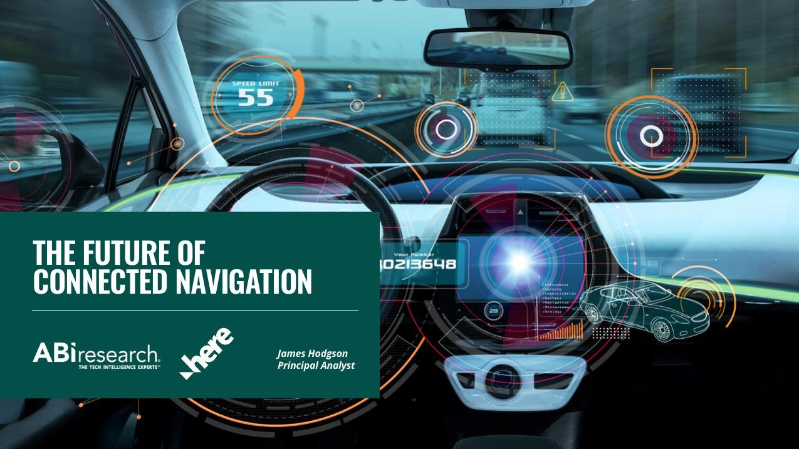

了解HERE如何实现汽车级质量的快速仿真。SceneXtract将AWS生成式AI搜索能力与HERE高精度实时地图相结合，帮助OEM和Tier1供应商在几分钟内生成测试场景。
借助车道级地图属性（如车道数），HERE AI 助手可为您提供更安全的超车建议，并基于丰富地图数据主动推荐精准路线，全面提升驾驶体验。

本白皮书由ABI Research撰写，深入探讨HERE Navigation如何助力汽车制造商打造以数字座舱为核心的卓越互联导航体验，并推动电动汽车的可持续普及。